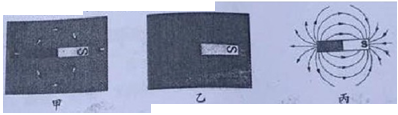
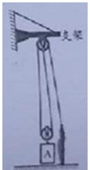

2020年北京市中考物理试题 · 选择题 第16、17、18、19、20题
16.关于分子的热运动和分子之间的作用力，下列说法正确的是（ ）
A. 扩散现象说明分子是运动的
B. 固体之间也可以发生扩散现象
C. 液体很难被压缩，是由于液体分子间存在引力
D. 固体很难被拉伸，说明固体分子间只存在引力
17.如图所示为游乐园的过山车运行的情境，下列说法正确的是（ ）
A. 过山车从高处加速滑下 过程中，动能增加
过程中，动能增加
B. 过山车从高处加速滑下是由于受到惯性的作用
C. 过山车从低处上升的过程中，重力势能增加
D. 过山车从低处上升的过程中，重力势能转化为动能
18.某同学研究磁体周围的磁场情况，将一根条形磁体放在水平桌面上，在它周围放置一些小磁针，小磁针的指向情况如图甲所示；将小磁针拿掉之后，在条形磁体上面放一块有机玻璃，玻璃上均匀撒一层铁屑，轻轻敲打玻璃，可以看到铁屑的分布情况如图乙所示；根据甲图和乙图所示的实验现象，用磁感线描述条形磁体周围的磁场情况如图丙所示。下列说法正确的是（ ）

A. 图甲所示的实验，研究的是条形磁体周围的磁场方向特点
B. 图乙所示的实验，研究的是条形磁体周围的磁场分布特点
C. 图丙所示的条形磁体周围的磁感线，是人们为了描述磁场建立的物理模型
D. 由图丙可知，条形磁体周围的磁场是由磁感线组成的
19.如图所示，在一个配有活塞的厚玻璃筒里放一小团硝化棉，迅速压下活塞，观察到硝化棉燃烧起来。关于该实验，下列说法正确的是（ ）
A. 硝化棉被点燃，表明筒内气体的温度升高
B. 下压活塞的过程中，筒内气体内能减小
C. 下压活塞的过程中，活塞对筒内气体做了功
D. 下压活塞的过程中，气体的内能转化为活塞的机械能
20.如图所示，滑轮组悬挂在水平支架上，某工人站在水平地面上，竖直向下拉动绳子自由端，使物体A以0.2m/s的速度匀速上升，提升过支架过程中滑轮组的机械效率为90%。已知物体A重540N，该工人重500N，两个滑轮质量相等，不计滑轮组的绳重和摩擦，关于该过程，下列说法正确的是（ ）

A. 绳子自由端受到竖直向下的拉力为200N
B. 绳子自由端拉力的功率为120W
C. 该工人对地面的压力为200N
D. 支架受到滑轮组的拉力为960N